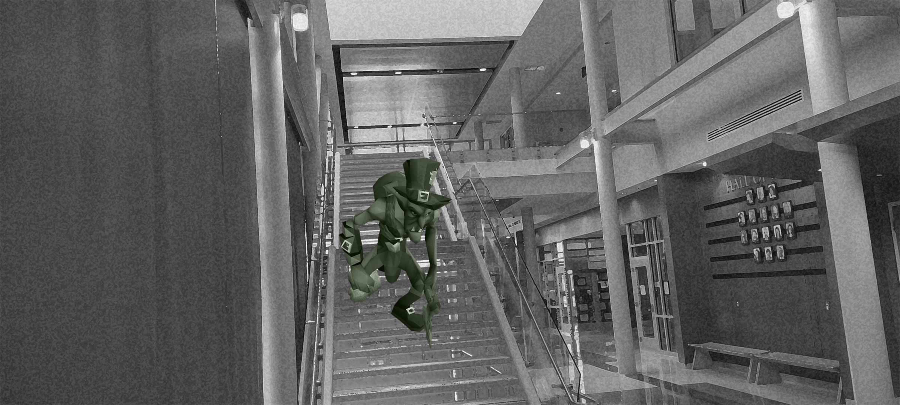

Dawn of the Dead: UMD’s Summer Supervisors Settle In
By Kiersten Hacker, Kurt Masline, Nolan Clancy, Emily Hahn April 21, 2022

Students at the University of Maryland left campus on Thursday, leaving behind a version of College Park without life as we know it.
Without students to fill classrooms and residential buildings day-to-day, the university staffs a skeleton crew of custodians, resident assistants and administrators to make sure things continue to run smoothly.
“It’s not always easy watching over things without the internal organs generally considered essential to sustain life and perform daily upkeep, but we make do,” said Mark Bonesman, head dead custodian of Knight Hall, who died in the journalism building in 2011.
Skeletons have generally been the most common creature over the past few hundred years, with the last dead census registering 897,130 bone-beings residing on campus.
The skeleton crew remains largely unseen from August to May, with just a few (un)lucky students taking summer classes ever encountering the undead.
“We try to make a good first impression, but it’s not always easy,” said Casper Ghoston, dean of the computer science program at the university. “Students just aren’t used to eerie breezes whooshing through their sentient body unannounced as they walk to class.”
While the supernatural entities on campus remain largely peaceful in their interactions with living students, the school has struggled to keep vampire faculty from indulging in a student every once in a while.
“Ve all vant to keep people safe, but sometimes ve just can’t help it,” said Dominic Dracula, vampire head of dining services at the university.
-

Photo of Knight Hall courtesy of Emily Hahn.
Dracula manages the South Campus Dining Hall, serving the rest of the undead patrons from 11:00 p.m. to 5:30 a.m. nightly. Among other difficulties, he notes the removal of all dishes containing garlic from the menu as a key obstacle in transitioning from the spring semester to the summer.
“If ve don’t make sure ve have made these dishes entirely vampire-friendly, ve could be looking at serious dead health code violations,” Dracula said.
The university has come under fire for questionable hiring tactics involved in staffing an entirely undead summer staff, but school administrators insist that these supernatural employees receive all the same pay and benefits as the ones that take their place throughout the school year.
The undead overseers are all given summer-long passes to use the on-campus gyms and recreation facilities, and some have even taken up weekly competitive leagues.
“Goblins vs. Ghouls has been a rivalry ever since I died, ohh, some 145 years ago,” said Salem Witcher, power forward stalwart of the Ghouls starting lineup for more than a century.
She meets her team at Ritchie Coliseum every Tuesday morning at 2:30 for an installment of the historic rivalry. The all-time series sits at 3,543-2,057, in favor of the Ghouls.
“Ve just vant everybody to get along, but the basketball vorries me,” Dracula said. “Last Tuesday, ve vent to vatch the game but the Goblin’s skeleton point guard lost a femur on the vay to the basket for a layup. Vhat a vaste.”
Population data courtesy of Hyde Industries.